Fundamentos y usos prácticos de Docker
Clase 7 :
Composes Geniales
Temas de clase 7:
Docker compose parte II
Awesome Compose
Awesome Compose
Docker Compose permite que tengamos aplicaciones complejas desplegadas en pocos minutos. A continuación se mostrarán algunos ejemplos y "composes" que sirven como punto de partida sobre cómo integrar diferentes servicios mediante un archivo Compose. No se recomienda su implementación en ambientes productivos críticos. *

Administración de contenedores
Portainer
Portainer es una interfaz gráfica web open source para la gestión de contenedores Docker, Docker Swarm, Kubernetes y otras plataformas de orquestación de contenedores. Portainer CE (Community Edition) es la versión gratuita sin soporte mantenido por la comunidad. Portainer dispone de una versión BE (Business Edition).
Portainer
- Portainer nos permite, entre otras cosas:
- Administrar contenedores, imágenes, volúmenes y redes.
- Soporte para múltiples nodos Docker
- Monitoreo en tiempo real de los recursos
- Una GUI intuitiva para crear, gestionar y monitorear contenedores

Yacht
Yach es otra interfaz gráfica para administrar Docker.
- Templates compatibles con Portainer
- Gestión básica de contenedores
- Implementación guiada de contenedores
- Panel de control para monitorear contenedores
- Compatibilidad y editor para Docker Compose

Composes para desarrollo
code-server
code-server es un VSCode que corre en un servidor remoto accesible vía web.
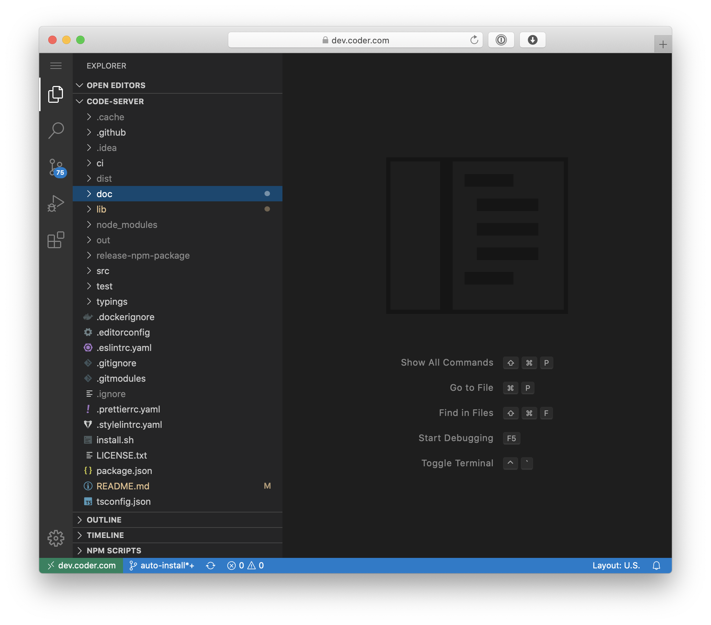Gitea
Gitea plataforma de DevOps privada opensource (+1380 contrib) soporte empresarial opcional. Git, CI/CD, etc. Puede correr en Docker.
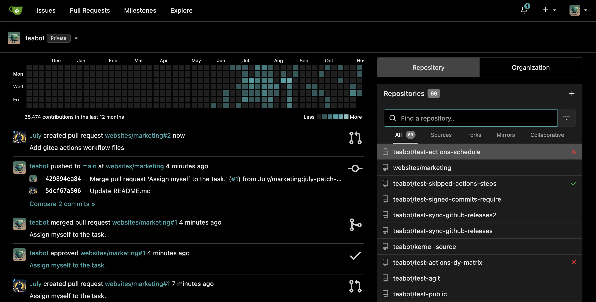Fastapi
FastAPI es un framework (muy performante, simple, y production-ready) para construir APIs con Python.
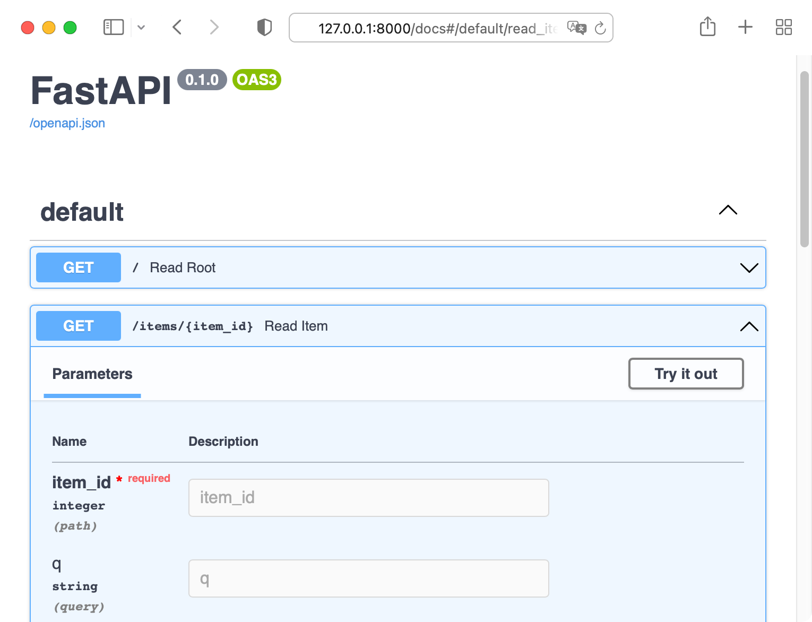Onedev
Onedev es un Git Server con CI/CD, Kanban y packages. Demo Online
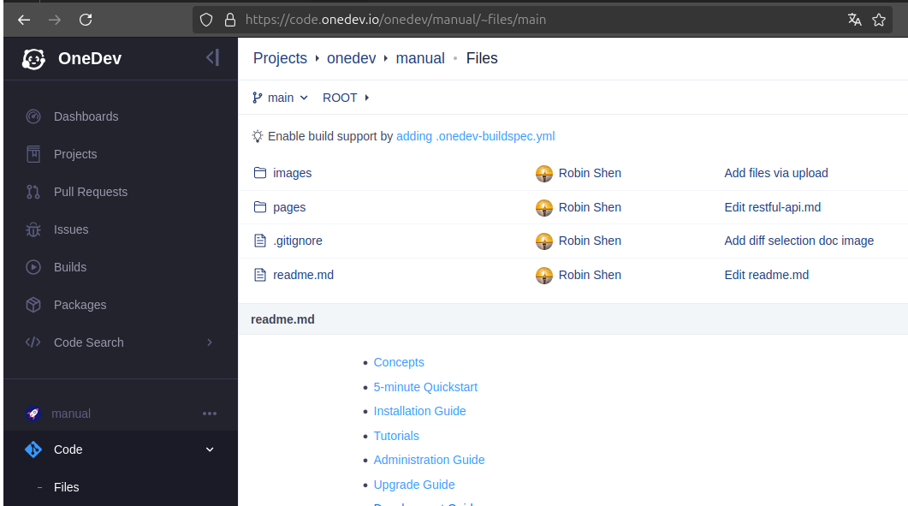Composes para Infra
Nginx Proxy Manager
Nginx Proxy Manager es un proxy reverso basado en Nginx. Con capacidad de generar certificados SSL/TLS con Let's Encrypt para exponer nuestras aplicaciones web de manera segura. Dispone de una amigable interfaz de usuario. Obviamene corre sobre Docker.
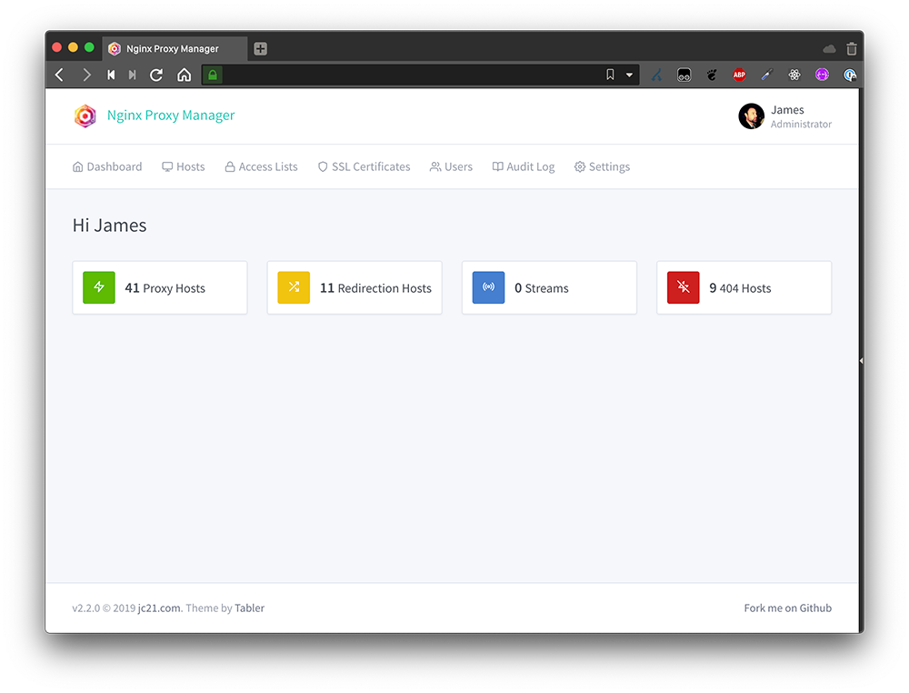 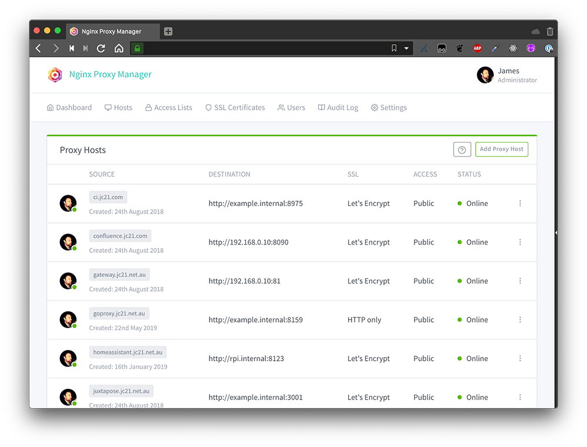WireGuard Easy
WireGuard es una VPN simple, rápida y moderna para cifrar conexiones. Wireguard Easy, hace que sea mas simple administrar esta VPN mediante una GUI web.
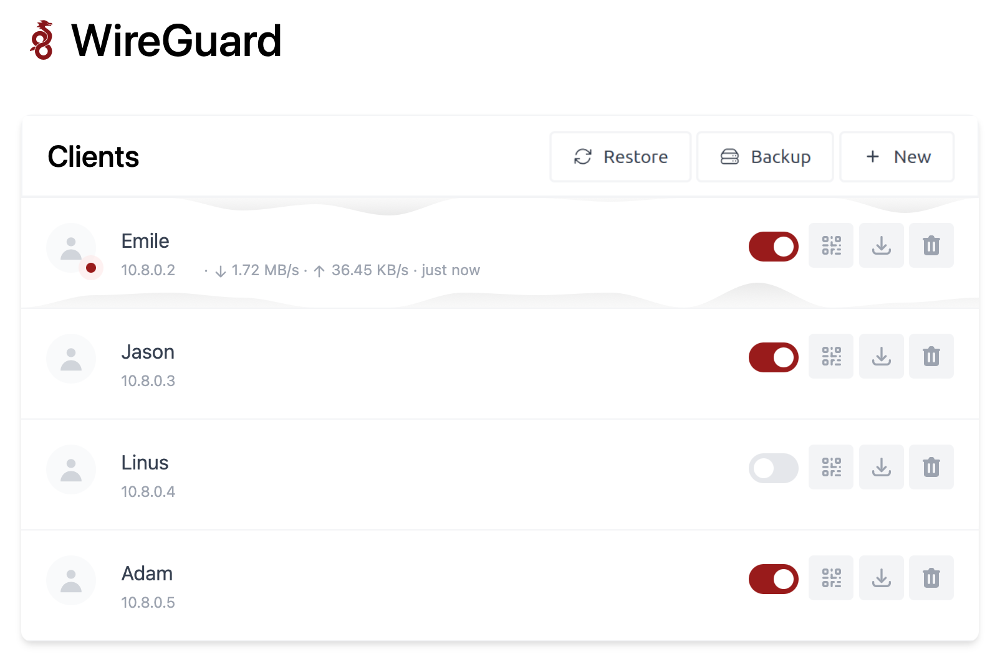Nextcloud
Nextcloud es una plataforma open-source que permite a los usuarios almacenar, sincronizar y compartir archivos de manera segura en su propio servidor, proporcionando una alternativa privada a servicios en la nube como Google Drive o Dropbox. Ofrece características como edición colaborativa de documentos, mensajería y gestión de calendarios, todo bajo el control del usuario o de la organización.
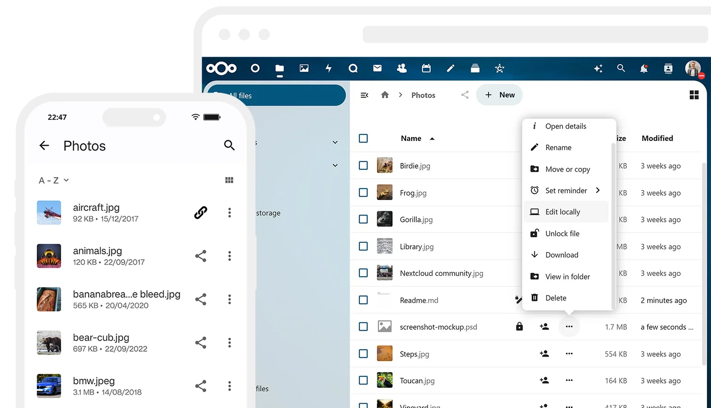Duplicati
Duplicati es un software de backup open-source que permite realizar copias de seguridad cifradas y comprimidas de archivos y enviarlas a diversos servicios de almacenamiento en la nube, como Google Drive, Amazon S3, entre otros, como también local o en red.
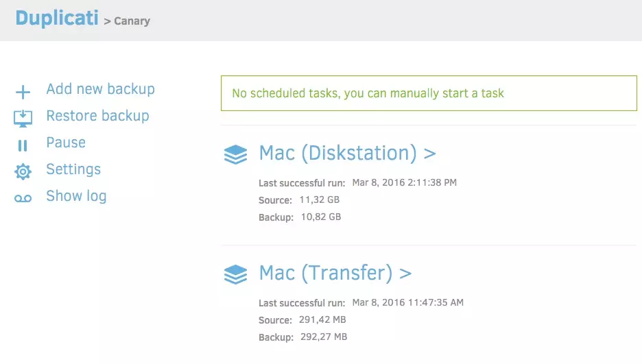 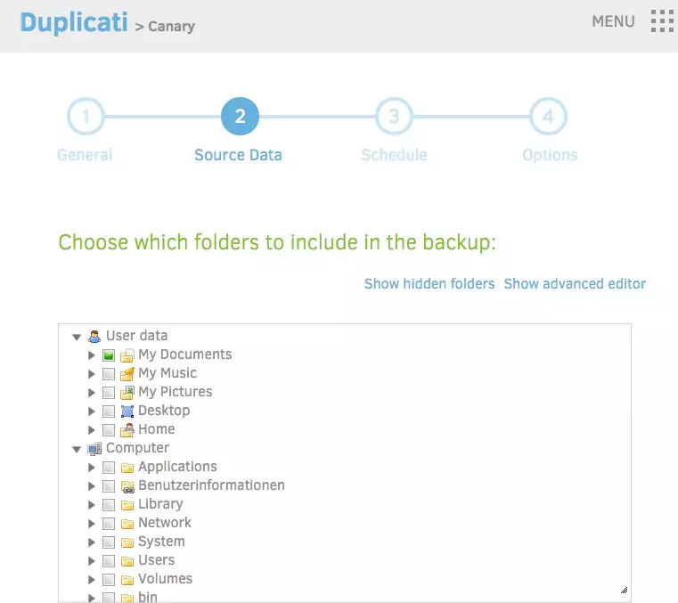Vaultwarden
Vaultwarden es una alternativa compatible a Bitwarden open source escrita en Rust para gestionar nuestras contraseñas y secretos. Deployable en Docker.
Requiere de certificados SSL para funcionar.
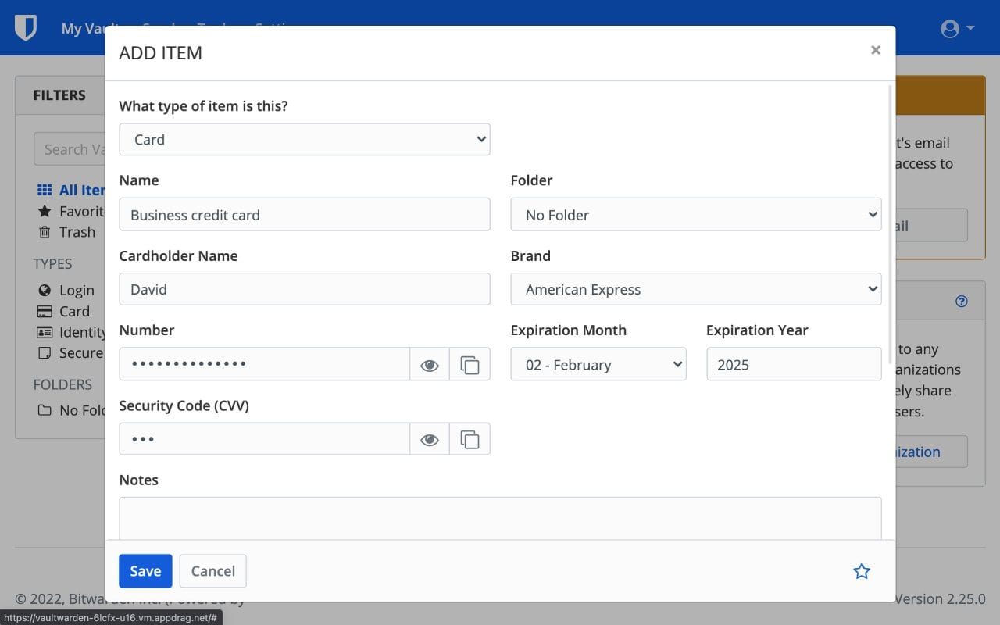Composes para HomeLab
immich
immich es "un clon" self-hosted de Google Photos open source con mas de 700 desarrolladores.
Dispone de una demo online. User: demo@immich.app | pass: demo
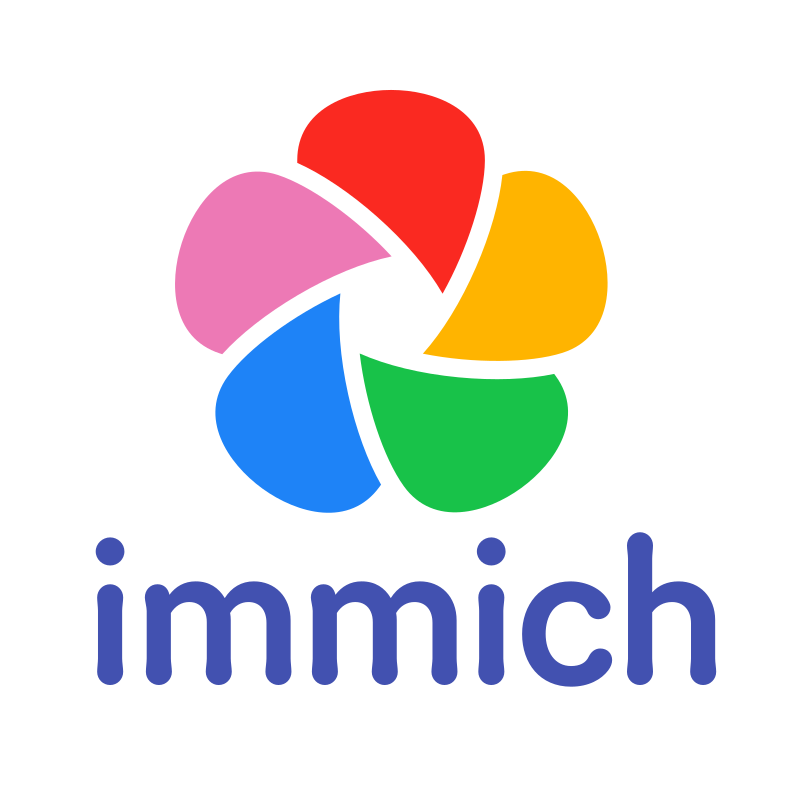 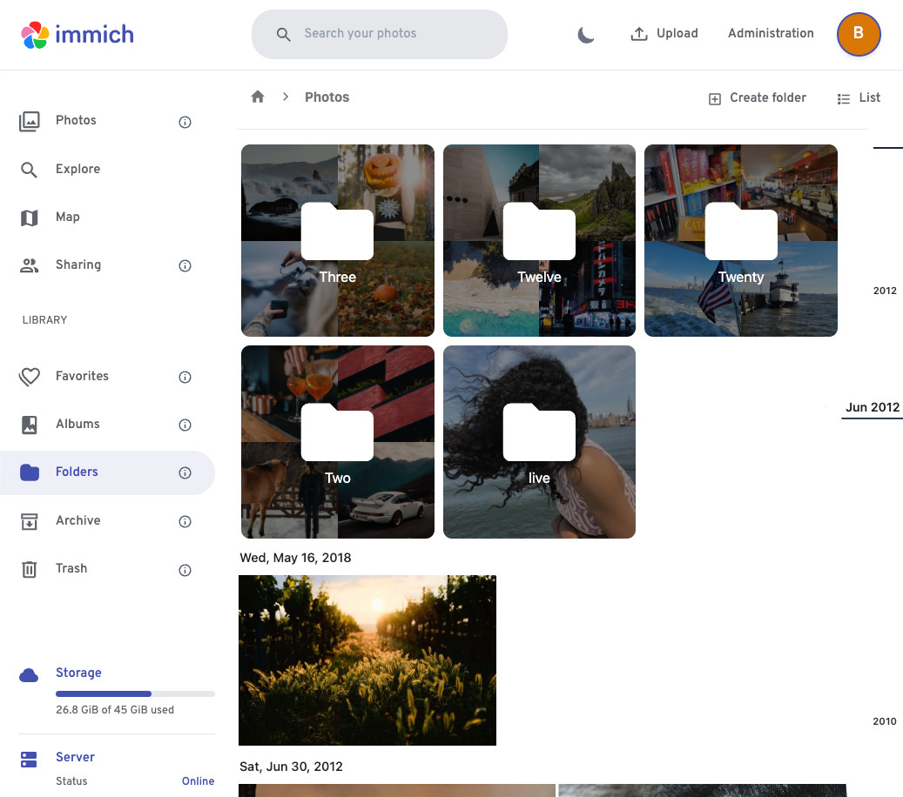pi-hole
Pi-Hole se define como un "agujero negro" para los anuncios de internet. Es un Ad block por DNS. Es deployable vía Docker Compose pero requiere cierta configuración básica en el DHCP de la red; asignar como DNS la IP que tendrá el Pi-Hole.
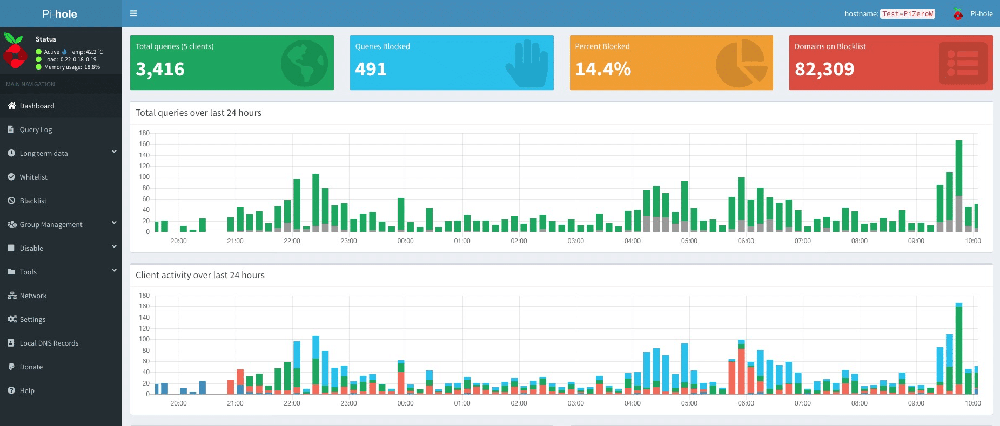Adguard Home
Adguard es una alternativa a Pi-Hole.

Home Assistant
Home Assistant es domótica de código abierto que prioriza el control local y la privacidad. Impulsado por una gran comunidad de entusiastas DIY. Ideal para correr sobre una Raspberry Pi o un server local.
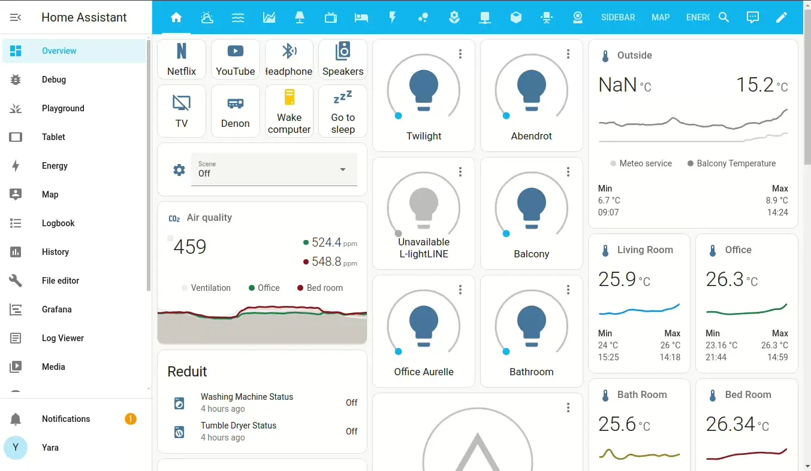Plex Media Server
Plex es una aplicación que permite a los usuarios organizar, gestionar y transmitir su colección de medios digitales, como películas, música, fotos y programas de televisión, a través de diferentes dispositivos conectados a la red.
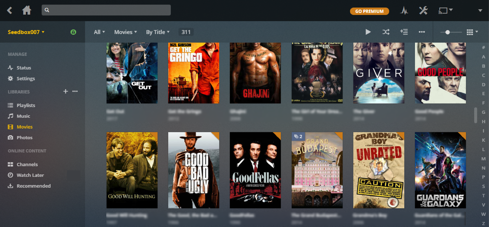Actividad de práctica:
- Lab 7 Awesome Compose